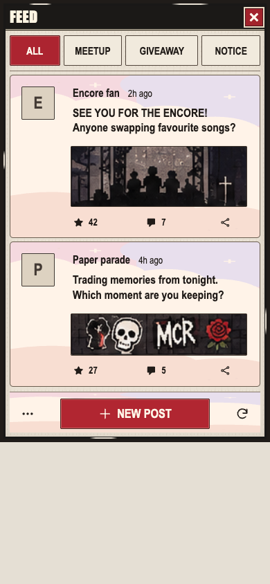
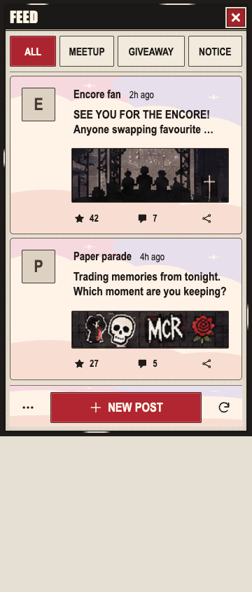
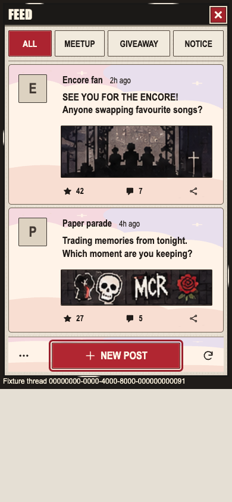

Explicit human policy permits CSS display enlargement of unchanged complete reference crops in this fixture. Intrinsic/source pixels remain197px; Thread and production media rules stay unchanged. Synthetic data, protected character framing and separate shell/background differences keep full fidelity open.



Actual native report · Pins · Automatic release · Scope and remaining gaps